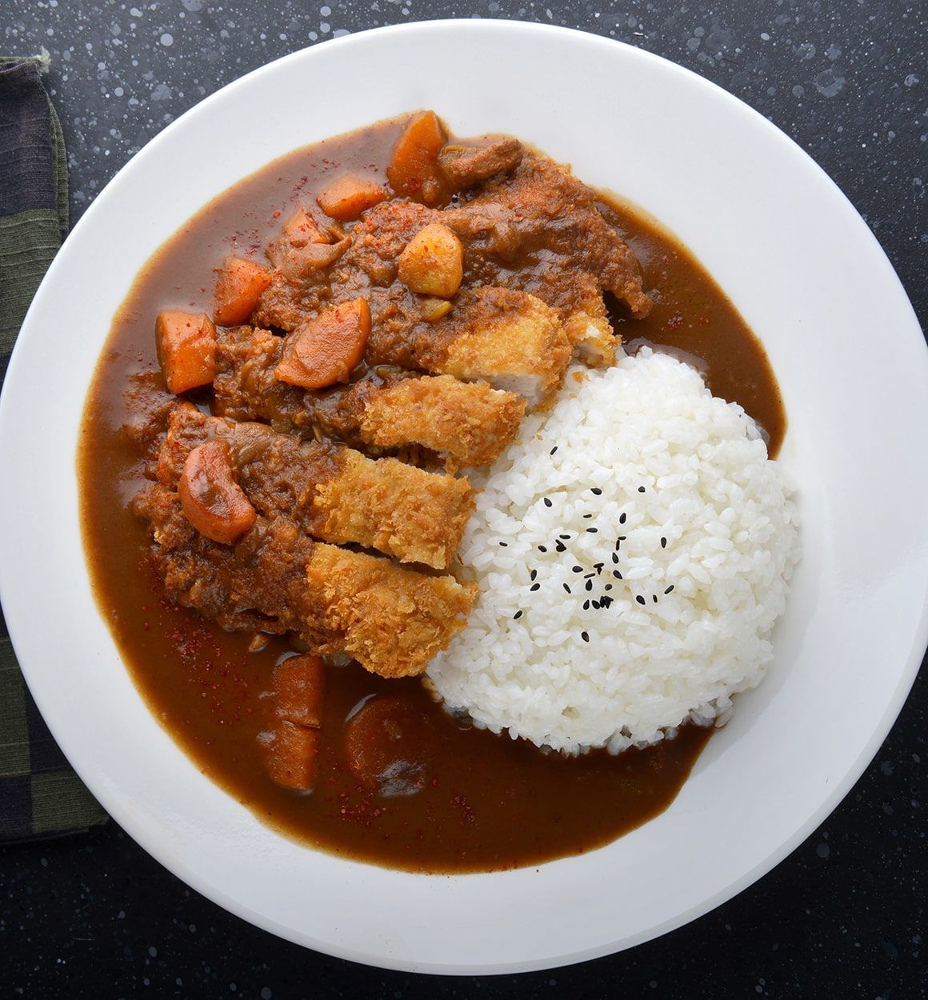

Chicken Katsu Curry

Description
This dish is a japanese dish which has chicken deep fried in panko bread crumbs, white rice, and jappanese curry
katsu is essentially a fried meat cutlet. Though the term "katsu" encompasses a wide variety of cutlets including:
But in this dish specifically, it will have chicken.
Ingredients:
- 450g chicken breasts pounded to 1cm thin cutlets
- Salt and pepper to taste
- 3 tbsp flour
- 1 large egg, whisked
- 75g panko bread crumbs
- 3-4 tbsp olive oil
- 400g uncoocked rice
- 800ml water
<1i>1 large carrot, peeled, cut into 1-inch cubes
- 1 small onion, peeled, cut into 1-inch cubes
- 300g potates, peeled, cut into 1-inch cubes
- 4-5 cubes of japanese curry
- tonkatsu sauce
Steps:
- Add your cut onions, potatoes, and carrots into a large pan half filled with water
- Bring the water to a boil and then simmer for 20 minutes or until the vegetables are soft. While this is happening, it would be a good idea to start cooking the rice now.
- Remove the pan from the heat. Add 4-5 bocks of curry roux to the pot with vegetables. turn on the heat to low and allow to simmer for 10 minutes. Keep mixing until the curry sauce is sthick and smooth.
- While the curry is infusing, season your chicken breast with salt and peper before covering with flour first, beaten egg second, then the panko bread crumbs
- Heat up the oil in a separate pan to 180C and carefully lower the cutlets into the oil and cook them for a few minutes on both sides until they become a golden brown color
- Slice the cooked chicken katsu into strips and lay over a bed of rice before adding the curry sauce. Garnish with the tonkatsu sauce and enjoy!